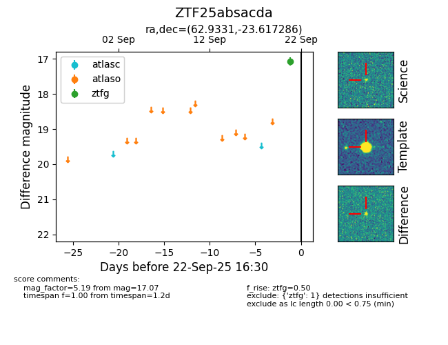

FINK: ZTF25absacda
Lasair: ZTF25absacda
ALeRCE: ZTF25absacda
ZTF25absacda (ztf,fink)
equatorial (ra, dec) = (62.9331,-23.61729)
galactic (l, b) = (220.1037,-44.91307)

last ztfg=17.07
1 ztfg detections